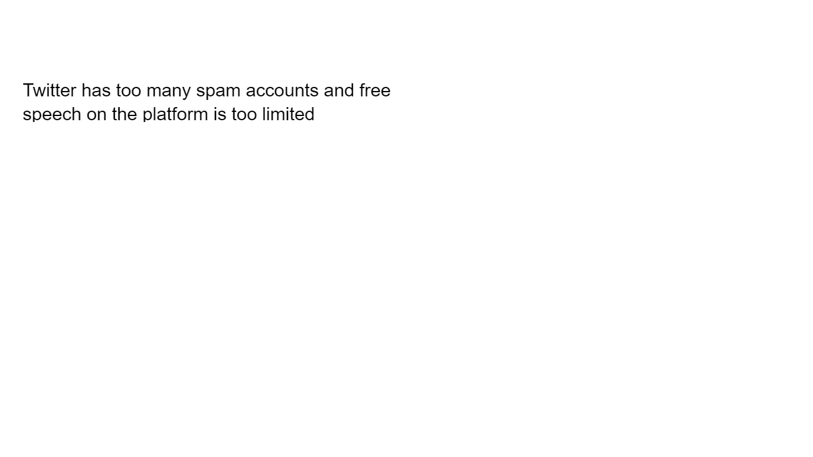
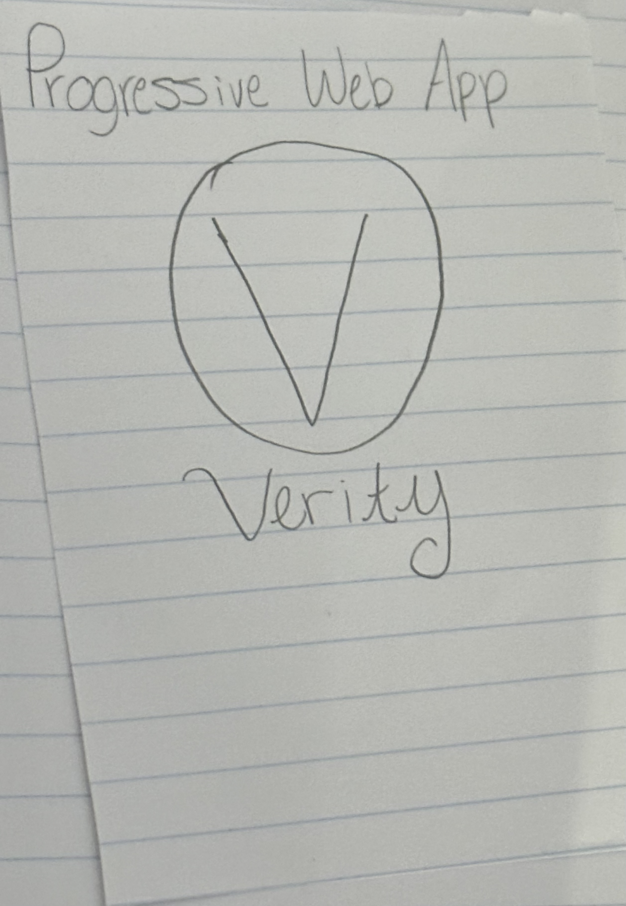

Problem Statement
Twitter has too many spam accounts and free speech on the platform is too limited
Affinity Diagram

We tackled the issue of Twitter's spam overload and limited free speech. By brainstorming solutions, we grouped ideas like enhanced bot detection, customizable filters, transparent moderation, and business models into clear categories, laying the groundwork for a more open and secure platform.
Affinity Diagram

**These images were assisted by ChatGPT, an AI language model developed by OpenAI** These sketches showcase the website in action across different user scenarios. For user Mia Chen, the screens highlight event creation, RSVP management, and registration confirmation. For user James Thompson the focus is on campaign performance, client engagement metrics, and quick response notifications. For user Sarah Martinez the sketch shows workshop setup, attendee registration, and post-event feedback management. Each interface emphasizes seamless, cross-device functionality without spam or bots.
Prototype
\ This is an app that easily reports spams and bots.